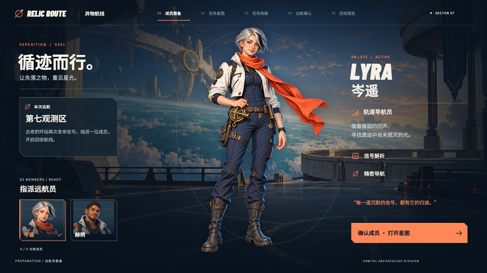
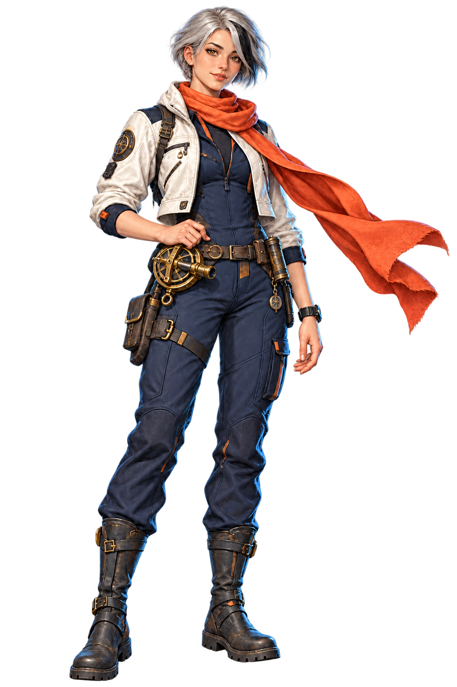
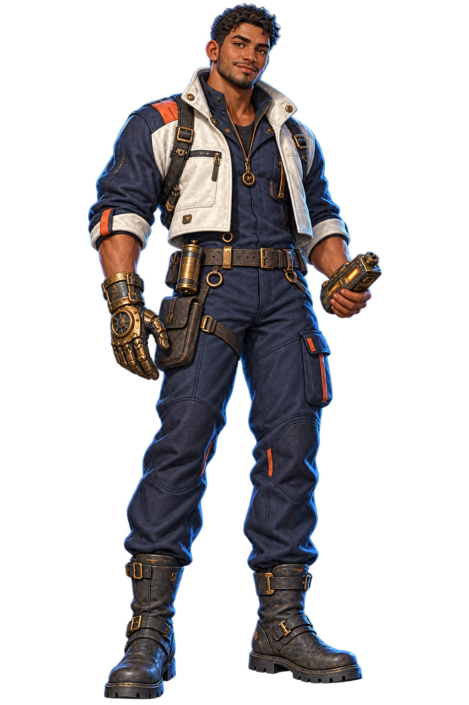
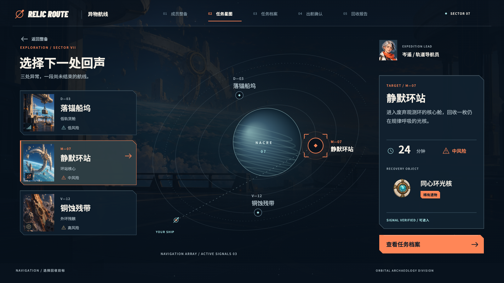
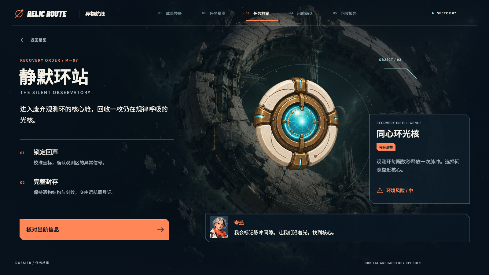
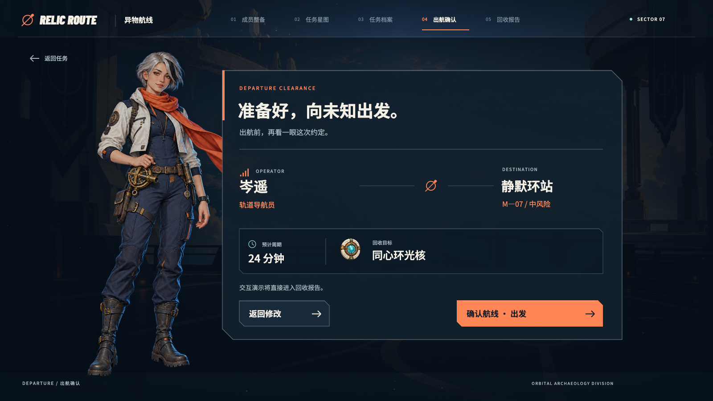
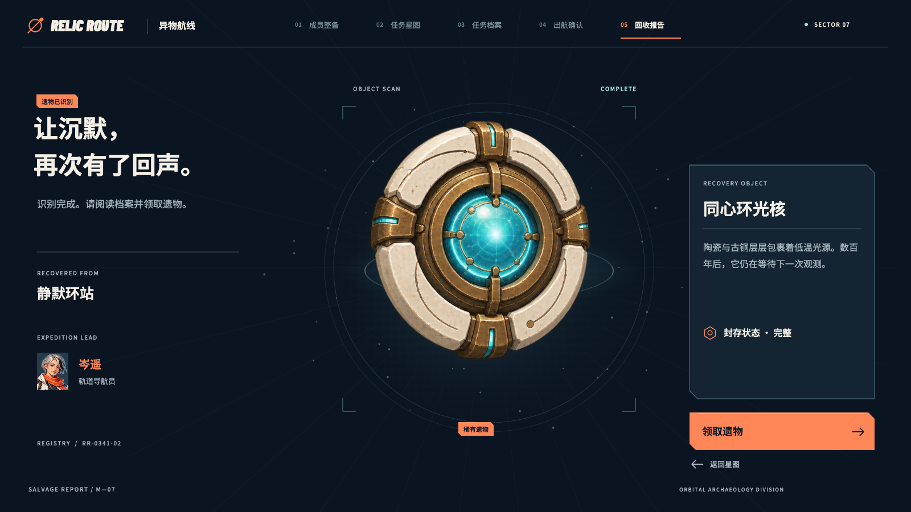
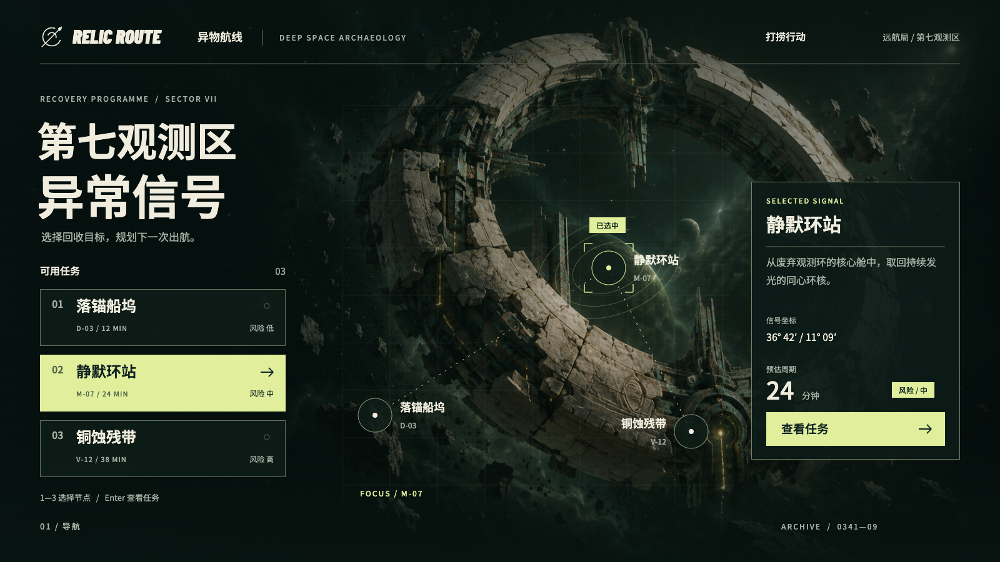

01 / IDENTITY
先认识一起出航的人。
角色主体位于视觉中心，任务背景与身份信息分居两侧。切换成员时，身份文字即时跟随，人像在 560 ms 内过渡。
指派岑遥 / 赫朔确认成员 → 打开星图


指派远航员，选择回收目标，核对任务，再揭示并领取遗物。五个界面围绕同一条行动链路，以人物、信息和动效共同建立远航的氛围。

角色主体位于视觉中心，任务背景与身份信息分居两侧。切换成员时，身份文字即时跟随，人像在 560 ms 内过渡。

任务列表与空间节点同步选中，风险、周期和回收物形成可比较的信息。当前成员沿链路保留。

档案展开任务的背景和回收要求。角色从主视觉变为同行的简报者，给目标补充语境。

将成员、航线与目标集中到出航信息中，明确区分“继续阅读”和“执行行动”。取消保留当前选择。

扫描逐步揭示遗物，完成后停稳显示名称与说明。截图为已识别、待领取状态；领取后显示已入库。
键盘：Tab 聚焦步骤，← → 切换；Tab 移动到“大图”按钮后按 Enter 放大。

一起重做的因素配色、构图、信息密度、人物与遗物素材、界面图形和转场节奏。
此处呈现整体设计变化，未做单变量效果归因，也没有用户研究或效果指标。
人物与身份同步改变。使用两张透明立绘与程序图层完成过渡。
斜切方向延续切角图形语言。完成后留出稳定的阅读区域。
遗物从局部显现到完整停稳，名称与领取动作在识别后到达。
原创游戏 UI 与动效概念作品，已实现五步可操作原型。项目负责界面构图、信息组织、按钮与程序图形、动效时序及前端实现。任务和结算为演示，不包含战斗、服务器或真实存档。
岑遥、赫朔两位角色，整备甲板、三处目的地场景和三件遗物图集使用 AI 辅助生成。角色是 2D 透明立绘，配合 Canvas 程序分层、视差和微动呈现。素材提示词与字体许可见项目 README。
设计以 PC 1600 × 900 为基准。构图与动效研究来源见设计参考文档；外部作品素材未打包。可用键盘操作，支持减少动态效果。本项目没有开展用户研究，不提供效果指标。